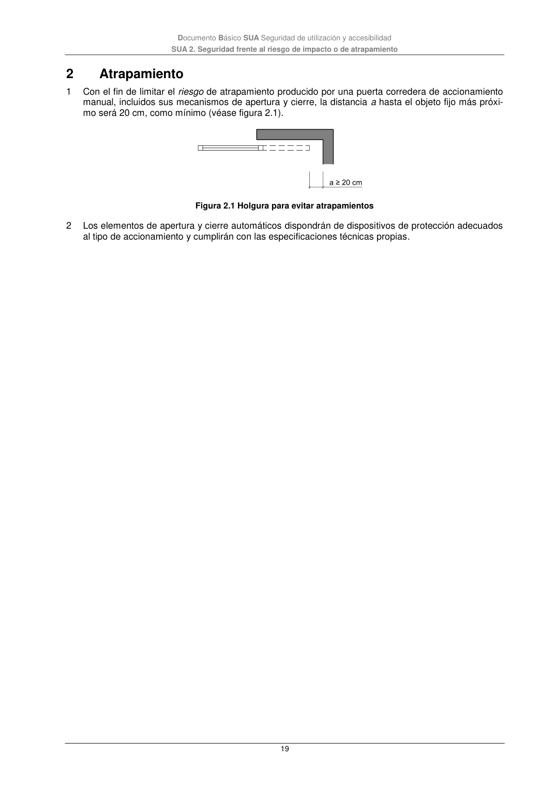

DB-SUA · 2 Atrapamiento · versión 2022-06-14
SHA256: 3cfb5bbb135e8f02faebd8b844e03e8947994c18d4c9e675a7d2aa37d1cd5958 · página física 19 de 47 · métodos de encabezado
solo si están cotejados.
Formatos: Markdown · JSON de bloques · PDF p. 19 · imagen PNG
Documento Básico SUA Seguridad de utilización y accesibilidad SUA 2. Seguridad frente al riesgo de impacto o de atrapamiento 19 2 Atrapamiento 1 Con el fin de limitar el riesgo de atrapamiento producido por una puerta corredera de accionamiento manual, incluidos sus mecanismos de apertura y cierre, la distancia a hasta el objeto fijo más próxi- mo será 20 cm, como mínimo (véase figura 2.1). Figura 2.1 Holgura para evitar atrapamientos 2 Los elementos de apertura y cierre automáticos dispondrán de dispositivos de protección adecuados al tipo de accionamiento y cumplirán con las especificaciones técnicas propias.
